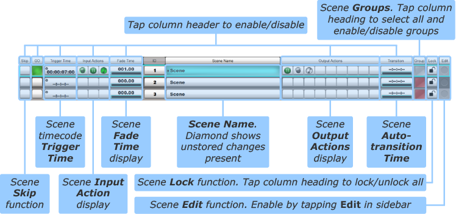

Automation Scene List
Navigate to MENU > Automation to access the Scene list. Use the Show Details button to show more/fewer rows in the list.
The following functions are available for each Scene row using the columns of the Scene List:
- Skip Causes the Scene to be skipped when triggered in sequence. See Scene Time Functions for details. Tap the Skip heading button to disable the Skip column.
- GO Recalls the Scene to the console, making it the Active Scene. Tap the Go heading button to disable the Go buttons in the list.
- Trigger Time Sets a timecode location at which the Scene is automatically triggered. See Scene Time Functions for details. Tap the Trigger Time heading button to disable triggering from timecode.
- Input Actions See Scene Input and Output Actions for details. Tap the Input Actions heading button once to disable the selected column. Touch again to disable all Input Action triggering.
- Fade Time See Scene Time Functions for details. Tap the Fade Time heading button to disable scene fading.
- ID Indicates the Scene's position in the Scene List.
- Scene Name Indicates the Scene's user editable name.
- Output Actions See Scene Input and Output Actions for details. Tap the Output Actions heading button once to disable the selected column. Touch again to disable all Output Actions.
- Transition Sets a Scene duration, after which time the console automatically transitions to the next Scene in the List. See Scene Time Functions for details. Tap the Transition heading button to disable Auto Transition mode.
- Lock prevents the scene from being edited. See Scene Lock below for details.
- Group Defines what edit Group each Scene is part of, if any. Tap the Group heading button once to engage Group All mode. Touch again to disable Group mode globally. See Scene Groups for details.

The final column in the Scene List is used for editing the List itself. To delete, move or copy+paste Scenes:
Enable the Edit function by touching the Edit button (near the top right corner of the screen);
Touch the round Edit indicator at the end of a row to select the scene. The indicator will go red to indicate that its row is being edited.
Multiple scenes (rows) can be selected. All scenes can be selected by touching the Edit label itself.
The three edit functions listed below the Edit button will now be available: Del (Delete), Move and Copy.
To delete Scenes, touch their Edit indicators so that they go red, then press & hold the Del button.
Notes:Scene deletion cannot be undone without reloading your showfile.
The Active Scene cannot be deleted.
To move Scenes, touch their Edit indicators so that they go red;
Touch the Move button – it will go blue to indicate that it is active;
Now touch the Scene which is in the position you wish to put the Moved Scene(s). The Scenes will be placed above the Scene you touched.
The Scenes will move to the new location. The other Scenes will move to close up any gaps.
To copy Scenes, touch their Edit indicators so that they go red;
Touch the Copy button – it will go blue and become a Paste button.
Now touch the Scene which is in the position you wish to paste the new Scenes.
The Scenes will be duplicated at the new location, with the word Copy appended to their names. The other Scenes will move to create space for them.
You can rename the copied Scenes in the usual way (See Scene Names and Notes).
Scene ID
Scene ID is for display purposes only and serve no operational purpose within the software. The Auto ID button (in the right side of the Detail Display when the ID column is selected) defines what happens to ID numbers when the Scene list is re-arranged:
- When the button is active, the ID column is simply renumbered to stay in order.
- When the button is inactive, Scene IDs will not change when Scenes are re-ordered; if new Scenes are placed in between old ones, their IDs will increment upwards from the Scene before, using decimals if necessary to prevent their IDs from matching the Scene after.
Pressing & holding the Auto ID button can then be used to renumber the Scenes in order.
Renumber Scenes with Tap
Note: Please note that Auto ID must be off to use this feature.Tapping on the column header for the ID column enables renumbering Scenes with a tap. The user can now tap on the scenes in the correct order to renumber them. i.e. the first scene tapped will receive number 1 and the second number 2 etc. Pressing and holding Reorder List will now reorder the scenes so they are in the order that you tapped them in.
Note:If two scenes are given the same number, the console will retain their relative positions against each other. For example if "Interlude" and "My Song" scenes appeared in that order in the scene list, and they were subsequently both manually numbered with scene number 1, "Interlude" would be first, and "My Song" would be second. But both scenes would retain the scene number 1.
Manual Scene Numbering
Scenes can be numbered manually by double tapping on the scene number in the Scene Detail View and entering the desired number using the keyboard.
Note: Please note that Auto ID must be off to use this feature.Scene Lock
Scenes can be made read only to prevent edits (including Input/Output Actions and per-scene filters).
With Edit engaged, tap on the padlock button to lock a scene.
This scene is now read only. It cannot be edited and when it is fired, the Store button will be disabled.
Tap the Lock column heading to cycle between locking all/none/individual scenes.
Links to Further Automation Help:
- Automation Overview
- Scene Time Functions
- Scene Names and Notes
- Scene Input and Output Actions
- Scene Groups
- Function Filters
- Automation Preview Mode
Index and Glossary